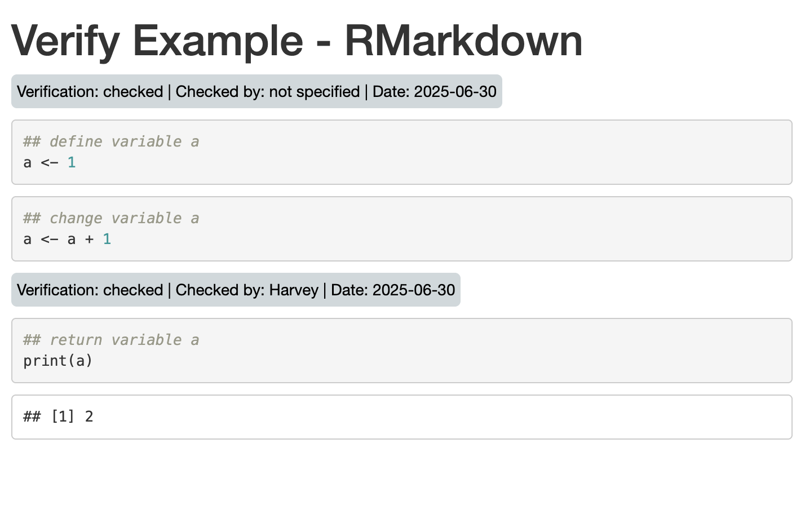
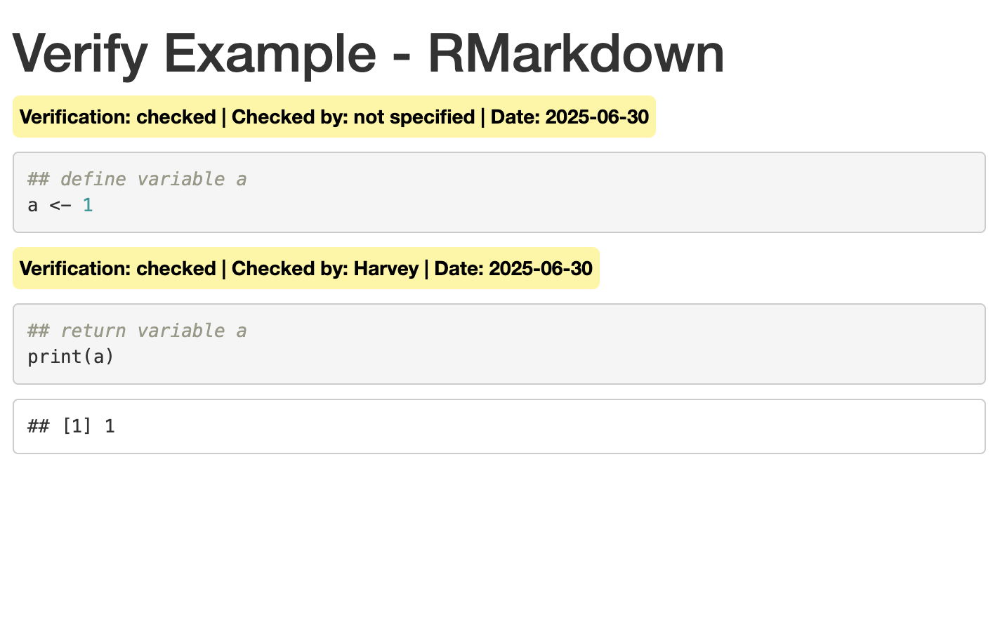

---
title: my document
output: html_document
---
```{r}
x <- mtcars
print(x)
```knitr hooks and Quarto extensions are powerful methods to change the way that RMarkdown and Quarto work. In this post we explore building a verification extension, an RMarkdown and Quarto extension which allows chunks to be tagged as verified and included in output with a notice.
Introduction
The verification process is simple in concept. When a code chunk has been reviewed a user can set a chunk option, verified as TRUE. They can also include a username and date to capture metadata. For example, the following chunk is unverified:
whereas the following has been verified:
---
title: my document
output: html_document
verify_filter: only
---
```{r, verified=TRUE, verified_by="Harvey", verified_date="2026-06-30"}
x <- mtcars
print(x)
```This simply adds metadata to the code chunk, but the great thing about RMarkdown and Quarto is how we work with this metadata. We want to define processes that will identify the value of verify_filter in the metadata header along with values for verified, verified_by and verified_date in code chunks and respond accordingly.
verify_filter can take values of ignore, highlight and only. ignore will simply ignore the verfied chunk option and return a rendered RMarkdown as if nothing has been changed. highlight will look for chunks with verified=TRUE and highlight them with a grey header, executing all code chunks. only will look for chunks with verified=TRUE and highlight them with a yellow header, but execute only these chunks, i.e. chunks that do not have verified=TRUE as an option will not be executed.
Knitr Hooks and Pandoc Extensions
RMarkdown and Quarto can be extended using knitr hooks and pandoc extensions. knitr hooks run during the knitting process, as code is evaluated, wheras pandoc extensions run once the markdown output has been generated. The flow of an RMarkdown or Quarto file to output is illustrated below:
flowchart LR subgraph RMarkdown/Quarto A(RMD)==>B(knitr) B(knitr)==>C(md) C(md)==>D(pandoc) B1(hooks)-->B(knitr) B(knitr)-->B1(hooks) D1(extensions)-->D(pandoc) D(pandoc)-->D1(extensions) end D(pandoc)===>E(output document) classDef bg fill:#ffffff; class RMarkdown/Quarto bg;
There are three types of knitr hook:
- option hooks. Used to change how a chunk option (eg
echo,eval) operates. Option hooks are triggered when a new chunk is processed. - chunk hooks. Used to modify chunk output. Chunk hooks are executed before and after the chunk code is run and can be built with different code that runs before and after executing the code chunk.
- output hooks. Used to customize an output. Output hooks are run after chunk output has been generated.
RMarkdown Approach
The RMarkdown approach consists of two knitr hooks, an option hook and a chunk hook. The first, knitr::opts_hooks$set() redefines the eval option so that we can capture evaluated chunks, ignoring them if under specific conditions. The second, knitr::hooks$set() creates a new hook to respond to verified=TRUE as a code chunk option. In addition to the hooks, we’ll add some css though a css chunk and an R function %||% to help with logic.
Top of the RMarkdown File
The top of the RMarkdown Rmd file is shown below. It contains so css for the styling and a utility function, %||%.
---
title: "Verify Example - RMarkdown"
output:
html_document:
self_contained: true
verify_filter: ignore # values = ignore, highlight, only
---
```{css, echo=FALSE}
.verify {
display: inline-block;
color: black;
padding: 5px;
border-radius: 5px;
margin-bottom: 10px;
font-weight: bold;
}
.verify-checked {
background-color: #FFF59D;
}
.verify-notchecked {
background-color: #CFD8DC;
font-weight: normal;
}
```
```{r, include=FALSE}
## if x is null return y, otherwise return x
`%||%` <- function(x, y) {
if (!is.null(x)) x else y
}
```Chunk Hook
Next we define the chunk hook. This is the hook that is executed for each chunk. Chunk hooks run both before and after the code contained in the chunk and are built using this code:
```{r}
knitr::knitr_hooks$set(hookname = function(before, options) {
if (before == TRUE) {
## code to run before chunk code is executed
} else {
## code to run after chunk code is executed
}
})
```knitr_hooks$set() can actually take up to four arguments, all of which are optional. These arguments are:
before. A boolean indicating if the hook is running before or after executing the code chunk.options. A list of chunk options for the current chunk.envir. The environment that the chunk is executing in.name. Name of the option that triggered the hook.
Our chunk hook is as follows:
```{r, echo=FALSE}
knitr::knit_hooks$set(verified = function(before, options) {
if (isTRUE(rmarkdown::metadata[["verify_filter"]] %in% c("only", "highlight"))) {
## check if the `verified` option is enabled (`TRUE`)
verified <- isTRUE(options[["verified"]])
verified_by <- options[["verified_by"]] %||% "not specified"
verified_date <- options[["verified_date"]] %||% "not specified"
## code to run before the code chunk
if (verified && before) {
class = ifelse(rmarkdown::metadata[["verify_filter"]] == "only", "verify-checked", "verify-notchecked")
glue::glue("<div class = 'verify {class}'>Verification: checked | Checked by: {verified_by} | Date: {verified_date}</div>")
}
}
})
```The hook passed before, so that we can identify when this is triggered before the chunk and respond accordinly, and options, so that we can access the chunk options. rmarkdown::metadata[["verify_filter"]] returns the verify_filter document metadata (rmarkdown::metadata is a great way to access document YAML metadata from within the document itself). Our function checks to see if the verify_filter metadata is only or highlight. If so it will return a div styled differently for only and highlight. Since the hook is run before the code chunk is executed (before == TRUE), the output div will sit above the chunk code in the output.
Option Hook
After the chunk hook we can define the option hook as follows:
```{r, echo=FALSE}
## redefine eval hook
knitr::opts_hooks$set(eval = function(options) {
if (isTRUE(rmarkdown::metadata[["verify_filter"]] == "only")) {
verified <- isTRUE(options[["verified"]])
options$echo <- verified
options$eval <- verified
}
return(options)
})
```The option hook redefines how eval works. It runs before the chunk is executed but does not replace the eval function itself. It does, however, allow us to modify how eval operates. In this case, each chunk will be processed using the new eval chunk option as follows:
- Is the global metadata parameter
verify_filterset to true? If so … - Is the chunk variable
verify_filterset toonly? If so … - Set the chunk
echoandevalvariables to the value of theverifiedchunk variable.
Putting it all together
Now we can include some chunks to process. The three chunks below define a variable, a, increase its value by one and print the result. The first and third chunk contain verified=TRUE whereas the second does not.
```{r, verified=TRUE, verified_date="2025-06-30"}
## define variable a
a <- 1
```
```{r, verified=FALSE}
## change variable a
a <- a + 1
```
```{r, verified=TRUE, verified_by="Harvey", verified_date="2025-06-30"}
## return variable a
print(a)
```Running with verify_filter: ignore
Rendering the RMarkdown with verify_filter: ignore or without verify_filter set at all leads to regular RMarkdown output.

Running with verify_filter: highlight
Rendering the RMarkdown with verify_filter: highlight triggers the chunk hook but not the option hook. Each ‘verified’ chunk output contains a header with a grey background. All chunks have been evaluated (hence the result for a is 2).

Running with verify_filter: only
Rendering the RMarkdown with verify_filter: only triggers both the chunk hook and the option hook. Each ‘verified’ chunk output contains a header with a yellow background. Only chunks with verified: TRUE have been evaluated (hence the result for a is 1).
